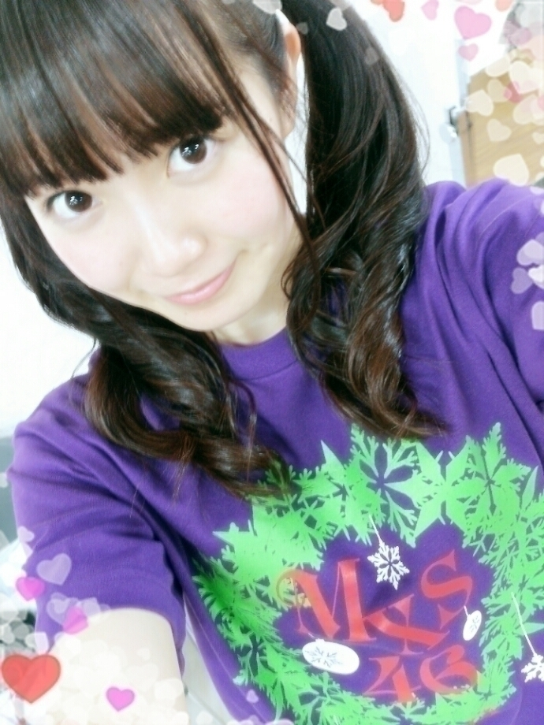
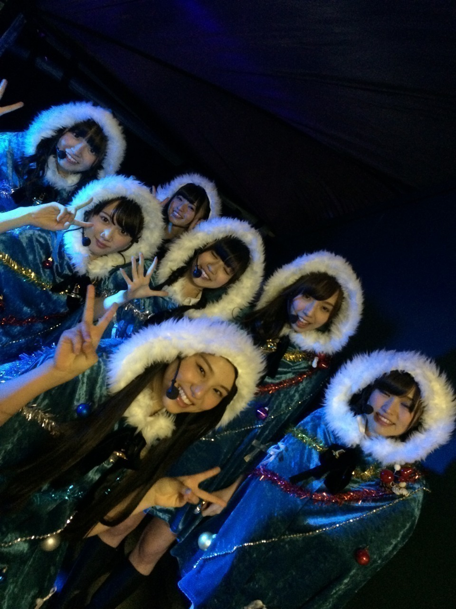

| 2014/12 17 Wed | 中元日芽香 ひめたん-OoO-その505 |

3日間4公演
たくさんの方に支えられて
無事終わりました\( ˆoˆ )/
来てくれたみなさん
ありがとうございました♡
アンダーライブ セカンド・シーズンFINAL!
今までもアンダーライブでは
シャッフルユニット、コント、1人MC
など様々な企画に挑戦してきましたが
今回挑戦したのは「全員センター」。
元々アンダーライブでは
流動的にポジションが変わるのも
面白いねって言われてきました
「全員センター」は
普段の乃木坂46のライブでは
観ることのできない企画だと思います。
もちろん簡単なことではないですが
アンダーライブにしか出来ないことに
みんなで挑戦しました(｀・ω・´)
みんなくじびきで決めたんだけど
ぴったりハマる人が多くて
やっぱり引き寄せてたりするのかなあ
そんな中でひめたんが引いたのは
ロマンスのスタート ！
ライブでやるとコールが揃って
盛り上がるアップテンポな曲であり
振り付けがかわいらしいのも特徴です
私はオリジナルメンバーではなかったけれど
センターを務めたことで
この曲に愛着が沸きました♡♡
ロマンスのスタートは
七瀬がセンターを務めた
8thシングルカップリング曲。
ライブではどうやったら
自分らしさを出せるかなと思って
たくさん考えました
センターをするならこの曲の間は
会場全体を私の色に染めてみたい。
私はダンスが好きだし
コールも元気いっぱいしてほしいし
笑顔は苦手だけど、この曲では
にこにこ笑った顔をいっぱい見てもらいたい！
そんな思いでステージに立ちました～
本番は客席に近い方のステージだったので
みなさんからのひめたんコールを
たくさん浴びて幸せ( ˇωˇ )♡
よかったよ～ってメンバーから
たくさん言ってもらえて
自信になったなあ。
見にきてくださったみなさん
いかがでしたか？？
あと、ミュージカルというものも
挑戦したんです(゜ω゜)
ひめたんは意地悪なお嬢様役をしました！
普段はこんな感じのひめたんにぃ♡
意地悪な役がぁ♡
務まるかなあって不安だったけれど♡♡
でもやってみたら意外とハマって(笑)
楽しかったですよ～
「はぁ？」の台詞の小生意気感が好きだと
褒められました(笑)
お芝居をする機会も実は
プリンシパルくらいしかないけれど
やってみると楽しい！
お芝居はまだまだ勉強だな(´-ω-`)
それでね、アンダーライブ
本当にたくさんの方が
遊びに来てくださってびっくりしたの
M1の咄嗟が始まった瞬間、
サイリウムで染まっている客席を見て
泣きそうになっちゃって......
なんかアンダーライブが
始まった頃のことを思い出したんだよね。
Merry Xmas Show 2014
ひめたんの参加している
カップリング曲はこんな感じ！
4位 涙がまだ悲しみだった頃
7位 あの日 僕は咄嗟に嘘をついた
8位 13日の金曜日
9位 失いたくないから
12位 乃木坂の詩
13位 春のメロディー
15位 狼に口笛を
21位 やさしさとは
23位 そんなバカな・・・
24位 海流の島よ
25位 生まれたままで
28位 左胸の勇気
29位 扇風機
投票してくださったみなさん
ありがとうございました( ^o^ )
ひめたんはバレッタ＋4曲
アルバムに収録されます。
個人的にはユニット曲の
やさしさとは、海流の島よが
ライブで披露できたのが嬉しかった～
どちらもMVがない曲だし
ライブでも毎回披露するわけではないので
純粋に楽曲が愛されているんだなあ～
咄嗟は個人的に思い入れがあるから
もうちょっと上にいて欲しかったかな
でも皆さんからいただいた順位
ありがたいです( ˇωˇ )♡
クリスマスメドレーは
さゆとふたりで
歌うパートがあったのですが
登場する直前までふたりで
顔合わせてきゃっきゃしたりして......♡
ふたりでユニゾンできたのも
嬉しかったなあ～
クリスマスショーのほうは
静かに聴かせるところもあって
おしとやかなクリスマスって感じ、
クリスマスイブショーこと
アンダーライブは、いつもの
パフォーマンス重視の元気な感じ。
両方来てくださった方は
同じ乃木坂、同じ有明コロシアムでも
違った雰囲気を楽しんでいただけたと思う！
ということでライブに参戦した方は
いかがだったでしょうか？
お留守番ちーむのみんなは
少しでも会場の雰囲気伝わったかな？
このライブ期間中
全然余裕がなくて日記も書けなくて
寂しかったかな(´-ω-`)ごめんね？
今日から通常♪
またたくさん日記更新するから
遊びにきてね～

いつもたくさんのコメント
ありがとうございます！
前回の日記に感想書いてくれたひとも
いらっしゃったけれど
ライブの感想まだのひとは聞かせてね♡
(＊´・ω・＊)